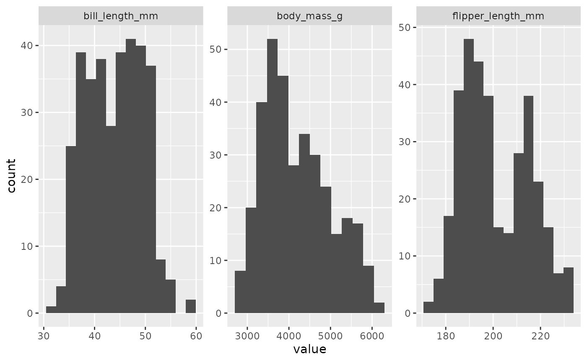

quickinspectR is a package designed for beginner R
programmers that makes graphically inspecting your data faster and
easier. In this article, we’ll go through basic usage, intermediate
usage, and advanced usage of quickinspectR using a
tried-and-true dataset among R programmers: penguins from
the palmerpenguins package.
Getting started
To get started, we first need to load the quicksinspectR package into our session.
If you don’t already have it installed, you can use the commented out
code below to install the devtools package - this lets us
install the development version of quickinspectR
straight from GitHub.
# install.packages("devtools")
# devtools::install_github("andrewfullerton/quickinspectR")
library(quickinspectR)We also need to load palmerpenguins in order to access
the penguins dataset. Let’s do that!
# install.packages("palmerpenguins")
library(palmerpenguins)Great! Now that we’re set up, we can see how quickinspectR works.
Basic usage
By design, all quickinspectR functions require only one argument: a data frame or a tibble (data). Unless otherwise specified, functions will display all the relevant variables contained in the data frame and default to easy-to-read plot styling.
Currently, quickinspectR contains three
inspect functions:
-
inspect_normality: graphically inspect the distribution of numeric variables in your data. -
inspect_balance: graphically inspect class imbalance among categorical variables. -
inspect_missing: graphically inspect missingness in your data.
Each of these functions can be used to help you familiarize yourself with your data and get your analyses off the ground just a bit quicker.
Using inspect_normality to inspect distribution
Let’s say I’m interested in exploring the relationship between body
mass, bill length, and flipper length using the penguins
dataset.
One of the first things I likely want to know before I start trying to do any intensive analysis is “are these variables normally distributed?” - the answer to this question will dictate both what types of analysis I can do and how I will approach my analysis.
I can fumble around with dplyr, tidyr, and
ggplot2 for an hour trying to build the plot I need from
the ground-up, or I can inspect_normality and get to the
fun stuff sooner.
inspect_normality(penguins)In a single line of code, I have a pretty good sense of how these
variables are distributed. If I want to get rid of some of the clutter
in that plot, I can tell inspect_normality which variables
I’m interested in via the vars argument.
inspect_normality(data = penguins,
vars = c("bill_length_mm", "flipper_length_mm", "body_mass_g"))
Using the vars argument, I can focus on the variables
I’m most interested in and leave the variables I’m not interested in out
of the plot.
Using inspect_balance to inspect class imbalance
Now that I’ve inspected some numeric variables, I’m thinking that
there might be some connection between the species of a
penguin, its sex, and its physical attributes.
There are a few important details I want to know right away. How many different species am I dealing with in this dataset? Are there enough observations corresponding to each classification of species/sex for me to use them meaningfully in my analysis?
Before undertaking any formal analysis, I want to make sure I’m
well-informed about this. I can inspect_balance to figure
this out quickly.
inspect_balance(penguins)With a single line of code, I can see that there’s a pretty even split between male and female penguins, but there’s much less balance between the different species of penguins. I’ll keep this in mind before I start trying to build any models.
Using inspect_missing to identify missing values
You may have noticed that an NA found its way into the
above plot. This is a good reminder that I should take a look to see if
there’s any missing data in the penguins dataset.
If data is missing in a patterned way, it could introduce bias into
my analysis. I can inspect_missing to figure this out.
inspect_missing(penguins)Most of the missing data seems to be in the sex
variable. I think it’ll be okay, but I’ll keep this in mind if I start
seeing some unexpected results later on. And just like we did before, I
can use the vars argument to select only those variables
I’m most interested in.
inspect_missing(data = penguins,
vars = c("bill_length_mm", "flipper_length_mm", "body_mass_g", "species", "sex"))Now that I have my bearings, I can move on to more advanced (and time-intensive) analysis. Using quickinspectR I was able to accomplish a few routine inspections in just a few minutes with just a few easy lines of code.
Intermediate usage
If you wanted to, you could stop reading right now and go use quickinspectR in your work, but sometimes it’s nice to add a little pop of colour to your visualizations.
Plot customization
All inspect functions in quickinspectR
contain several additional (but optional) arguments to make plot
customization more accessible for the beginner (or the experienced
programmer who’s in a rush).
-
vars(as seen above) allows you to easily select the variables you want to visualize and expects a character vector of variable names as input. -
fill_colourlets you pick your colour of choice and expects an R-supported colour or hex value as input. -
titlelets you add a descriptive title to your plot. It expects a non-empty string as input.
inspect_normality(data = penguins,
vars = c("bill_length_mm", "flipper_length_mm", "body_mass_g"),
fill_colour = "blue",
title = "Penguin Attributes")Now you can inspect your data in style! While some
inspect functions contain additional arguments, all share
these same basic customization options.
To see what additional arguments a particular inspect
function has, you can check the documentation by running
?inspect_... in the console, replacing ...
with your function of choice. For example, running
?inspect_normality will reveal an additional
bins argument that lets you specify the number of bins to
use in each histogram visualization.
Advanced usage
While quickinspectR is intended as a package to help novice R programmers get their analyses off the ground more efficiently rather than build deeply customized plots, there are plenty of opportunities to extend quickinspectR when you want to.
Using ... to extend inspect functions
Under the hood, quickinspectR is generating ggplot2
objects. Using the ... argument, you can pass any supported
ggplot2 argument directly into the plot’s “main” geom
layer.
When using inspect_normality, your arguments will be
passed right into the geom_histogram layer. When using
inspect_balance and inspect_missing, your
arguments will land in the geom_bar layer.
inspect_normality(data = penguins,
vars = c("bill_length_mm", "flipper_length_mm", "body_mass_g"),
fill_colour = "navyblue",
title = "Penguin Attributes",
colour = "lightblue", # Specifies the bar outline colour
alpha = 0.7) # Reduces the opacityUsing colour and alpha, we were able to add
additional customization to our plot.
Adding additional ggplot2 layers
While passing additional arguments into a pre-specified
geom layer is great, it’s not without limitations. Since
inspect functions return a standard ggplot2 object, you can
easily add themes, layers, and more using standard ggplot2
syntax. Let’s add a dark theme to the plot.
library(ggplot2) # Load ggplot2
inspect_normality(data = penguins,
vars = c("bill_length_mm", "flipper_length_mm", "body_mass_g"),
fill_colour = "navyblue",
title = "Penguin Attributes",
colour = "lightblue",
alpha = 0.7) +
theme_dark() # Adds dark themeAnother situation where this comes in handy is when you want to use
an inspect function to get your plot most of the
way there, but add some additional modifications and geom
layers based on a specific use case. Let’s add some custom axis labels
and a geom_rug layer.
inspect_normality(data = penguins,
vars = c("bill_length_mm", "flipper_length_mm", "body_mass_g"),
fill_colour = "navyblue",
title = "Penguin Attributes",
colour = "lightblue",
alpha = 0.7) +
theme_dark() +
labs(x = "Physical attributes", y = "Count") + # Axis labels
geom_rug(aes(x = value), color = "red", alpha = 0.5) # Geom layer